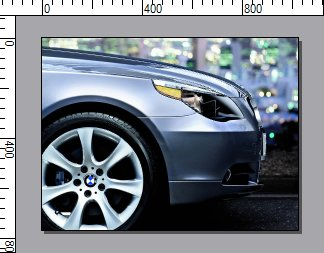
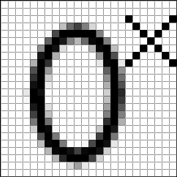

Rulers and Grid

The Rulers option can be used to show or hide the measuring rulers that are available at the top and left of the canvas. These rulers can help to align drawings to specific positions on the image without the need to watch the cursor position as shown at the right edge of the status bar.
The Grid setting allows you to show or hide the grid
for zoomed-in editing. When enabled and the zoom is at least 400%, the grid
will be shown above the image along pixel boundries. list allows you to see
exactly where invidual pixel positions are when doing precise zoomed-in
editing. 